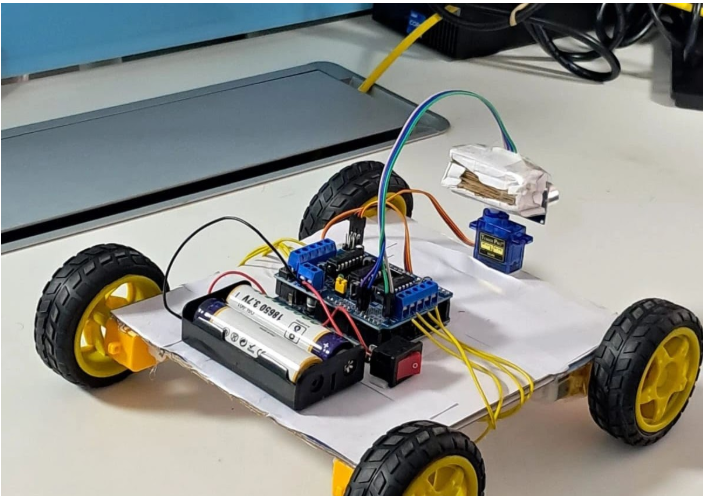

A fully functional autonomous robot prototype built as an Embedded Systems project. Utilizes HC-SR04 ultrasonic sensor for real-time obstacle detection and servo motor for dynamic navigation, powered by Li-ion batteries.
This embedded systems project showcases a fully functional autonomous robot prototype. The robot integrates Arduino UNO microcontroller with an HC-SR04 ultrasonic sensor for real-time obstacle detection, L298N motor driver for precise motor control, and servo motor for dynamic directional steering. Powered by 18650 Li-ion batteries, the robot navigates autonomously while continuously scanning and responding to environmental obstacles without human intervention.
This embedded systems project demonstrates comprehensive knowledge of hardware integration, real-time sensor processing, and embedded control systems. Successfully overcame critical challenges including motor stability optimization during tight turns and power consumption efficiency with Li-ion batteries. The fully functional prototype showcases practical experience in interfacing multiple hardware components, algorithm optimization for resource-constrained environments, and the ability to translate theoretical concepts into working embedded systems.
